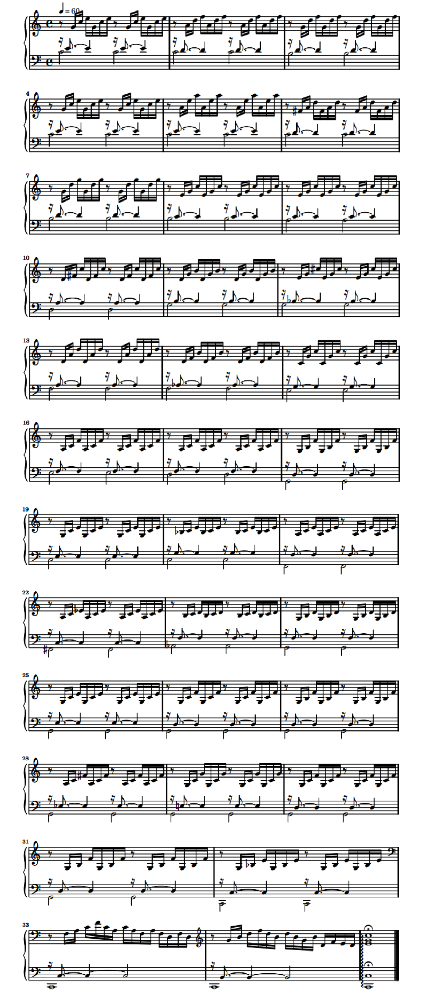

.png) Volver
Volver
Prelude and Fugue No. 1
El Ave María de Bach/Gounod es una composición sobre el texto en latín Avemaría publicado originalmente en 1853 con la Méditation sur le Premier Prélude de Piano de S. Bach. La pieza consiste en una melodía del compositor romántico francés Charles Gounod, especialmente diseñada para ser superpuesta sobre el Preludio n.º 1 en do mayor, BWV 846, del Libro I de J. S. Bach, El clave bien temperado, escrito 137 años antes.
